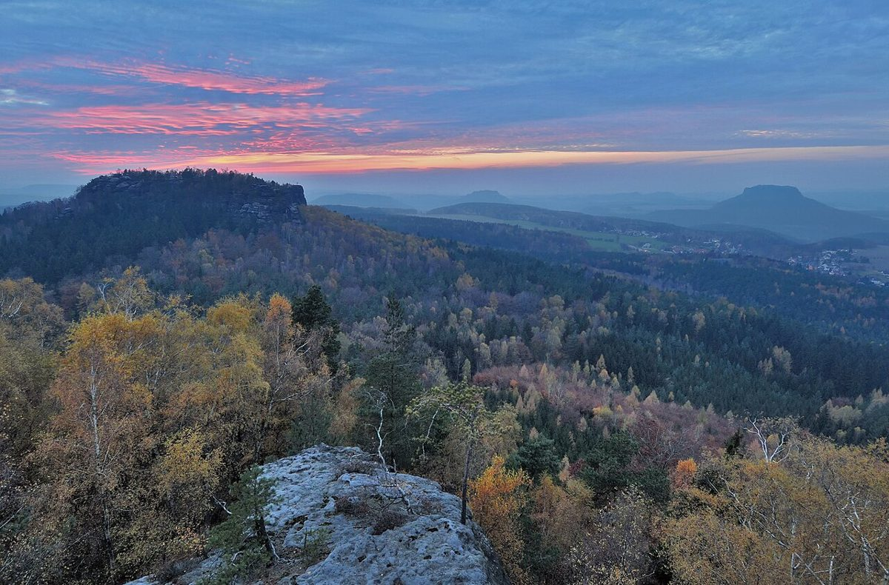

La Suisse Saxonne : un joyau naturel en Allemagne

La Suisse Saxonne, ou Sächsische Schweiz en allemand, est une région fascinante située à l'est de l'Allemagne, près de Dresde. Ce parc national est une destination idéale pour ceux qui cherchent à se reconnecter avec la nature tout en profitant de paysages spectaculaires. Voici tout ce que vous devez savoir pour planifier votre escapade inoubliable.
Anreise
La Suisse Saxonne est facilement accessible depuis plusieurs grandes villes allemandes et européennes. Si vous voyagez en avion, l'aéroport de Dresde est le plus proche. De là, vous pouvez prendre un train ou louer une voiture pour rejoindre la région en moins d'une heure. Les amateurs de train apprécieront les connexions fréquentes et pittoresques depuis Dresde ou Prague. Pour ceux qui préfèrent la route, la région est bien desservie par les autoroutes allemandes.
Meilleure période pour visiter
La Suisse Saxonne se visite toute l'année, mais chaque saison offre une expérience unique. Le printemps et l'été sont parfaits pour les randonnées et les activités en plein air, avec des températures agréables et une nature florissante. L'automne, quant à lui, transforme le paysage en une palette de couleurs chaudes, idéal pour les photographes. En hiver, bien qu'il fasse plus froid, les chemins enneigés et les formations rocheuses recouvertes de givre créent une atmosphère magique.
Les incontournables
1. Le Basteibrücke
Ce pont en pierre emblématique offre une vue imprenable sur les formations rocheuses et la vallée de l'Elbe. C'est un spot parfait pour les photos et une halte incontournable.
2. Le Festung Königstein
Cette forteresse historique est l'une des plus grandes d'Europe. Perchée sur un plateau rocheux, elle offre un panorama à couper le souffle et un voyage dans le temps.
3. Le parc national de la Suisse Saxonne
Avec ses sentiers de randonnée bien balisés, ce parc est un paradis pour les amateurs de nature. Ne manquez pas les formations rocheuses uniques comme le Schrammsteine ou le Lichtenhainer Wasserfall.
4. La ville de Pirna
Surnommée la 'porte de la Suisse Saxonne', cette charmante ville médiévale vaut le détour pour son architecture préservée et son ambiance typique.
Gastronomie locale
La cuisine de la région est simple mais délicieuse, mettant en avant des produits locaux. Essayez le Quarkkeulchen, une spécialité sucrée à base de pommes de terre, ou le Sauerbraten, un plat de viande marinée. Les restaurants au bord de l'Elbe offrent souvent une vue magnifique pour accompagner votre repas.
Que vous soyez un randonneur chevronné, un amateur d'histoire ou simplement à la recherche de calme et de beauté, la Suisse Saxonne saura vous captiver. Préparez votre sac à dos et partez à la découverte de ce trésor naturel allemand !
Haiktec
- Petit Guide Pratique pour les Propriétaires de 1 à 5 Logements : Organisation et Gestion Simplifiée
- Planificateur de Soins et Suivi Médical pour Personnes Âgées
- Le Guide Pratique pour Freelancer: Organisez, Gérez, Réussissez
Text mit KI erstellt und automatisch geprueft.